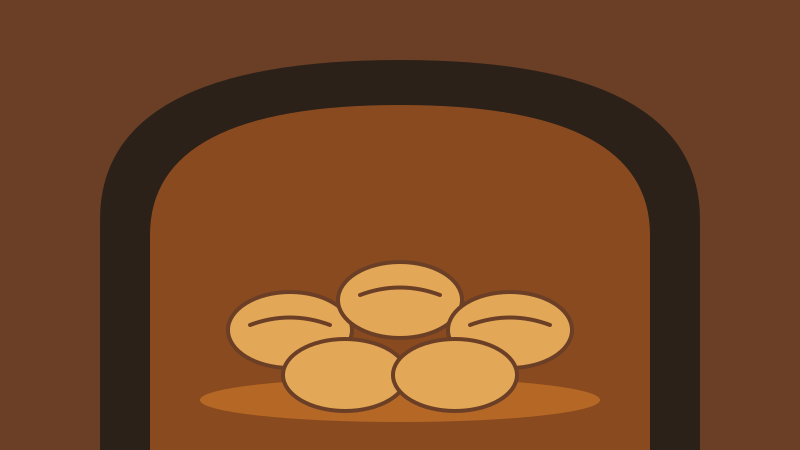

Our Story
Follow the timeline from 1939 to today, from the first pugon bake to the café you can visit now.
Est. 1939 · Quezon City
Fresh pandesal and pan de suelo, made the traditional way with no additives. Pre-order your cakes, pancit and holiday treats today.
Order Ahead
Founded in 1939 by Marcelo Javier and Leticia Bonifacio at 43 Judge Jimenez St. corner K-1st St., Kamuning Bakery Cafe is one of the oldest bakeries in Quezon City. It still bakes in its original wood-fired pugon, and its flagship pan de suelo is baked right on the oven floor.
Today the café keeps 385 heritage recipes alive and serves breads, coffee and comfort dishes to neighbors, students and families across the city.
Honored with the Manuel L. Quezon Gawad Parangal Award in October 2014.
Follow the timeline from 1939 to today, from the first pugon bake to the café you can visit now.
Breads, pastries, mocha chiffon cakes, pugon-roasted chicken, pansit sisig and Christmas fruitcake.
Reserve dedication cakes, birthday pancit and holiday food for pickup with one simple form.
Join the Pandesal Forum and World Pandesal Day on October 16, when free bread is given out.